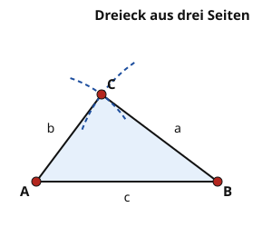

Zeichnen und Konstruieren
Mit einem KI-Tutor lernen
Ein KI-Tutor erklärt dir diese Seite und hilft dir bei den Aufgaben. Wähl deinen Assistenten:
Mit Claude öffnen Mit ChatGPT öffnen Mit Mistral Vibe öffnen
Du nutzt dein eigenes Konto beim Anbieter. Der Assistent ist kein Angebot von lernapps.net: lernapps liefert nur Inhalte und Aufgaben. Die Wahl gilt für alle Seiten, nur auf diesem Gerät.
Ein Kreis um den Schatz
Nika und Jonas lesen den siebten Hinweis ihrer Schatzkarte: Er verlangt einen Kreis um den Schatzpunkt, den du mit dem Zirkel zeichnest. Du lernst hier, mit dem Zirkel zu konstruieren und ein Dreieck aus seinen drei Seiten zu zeichnen. Das baut auf Strecken und Figuren der Seiten davor auf.
Aufgabe
Lösung
3 cm richtige Antwort
Richtig. Der Zirkel bleibt gleich weit geöffnet, also hat jeder Punkt den gleichen Abstand von M.
6 cm
6 cm ist die Breite des ganzen Kreises. Der Abstand von M ist die Hälfte davon.
Das ist bei jedem Punkt anders.
Der Zirkel ändert seine Öffnung nicht. Darum sind alle Abstände gleich.
Alle Punkte eines Kreises haben denselben Abstand zum Mittelpunkt. Das ist die Öffnung des Zirkels.
Ein Dreieck aus drei Seiten

© CC-BY-4.0Zwei Kreisbögen treffen sich im Punkt C.
Wenn du ein Dreieck genau nachbauen willst, musst du nicht schätzen: Mit dem Zirkel überträgst du Längen, wenn du die drei Seiten kennst. Die Seiten heißen nach der Ecke, die ihnen gegenübersteht: a ist die Strecke BC, b die Strecke AC und c die Strecke AB. Du kennst die drei Seiten a, b und c. Zeichne zuerst die Strecke c mit den Endpunkten A und B. Der Radius ist der Abstand vom Mittelpunkt zum Kreis, also die Öffnung des Zirkels. Stelle den Zirkel auf b ein und zeichne einen Kreisbogen um A. Stelle ihn auf a ein und zeichne einen Kreisbogen um B. Ein Kreisbogen ist ein Stück eines Kreises. Dort, wo sich die Bögen schneiden, liegt der Punkt C, ihr Schnittpunkt. Verbinde C mit A und B.
- Radius
Der Radius ist der Abstand vom Mittelpunkt eines Kreises zum Kreis. Er ist die Öffnung des Zirkels.
Merke
Der Zirkel muss genau auf die Länge der Seite eingestellt sein. Prüfe die Öffnung vor dem Zeichnen am Lineal. Sind die Seiten zu kurz, reichen die Bögen nicht bis zueinander, und es entsteht kein Dreieck.
Ein Beispiel
Dreieck mit a = 4 cm, b = 3 cm, c = 5 cm
Zeichne c = 5 cm. Öffne den Zirkel auf 3 cm und ziehe einen Bogen um A. Öffne ihn auf 4 cm und ziehe einen Bogen um B. Verbinde den Schnittpunkt C mit A und B.
Übung
Mit diesen Aufgaben prüfst du, ob du ein Dreieck aus drei Seiten konstruieren kannst.
Aufgabe
Lösung
Richtige Antwort: 1. Zeichne die Strecke c mit den Endpunkten A und B., 2. Zeichne die beiden Kreisbögen: um A mit dem Radius b (Strecke AC) und um B mit dem Radius a (Strecke BC)., 3. Verbinde den Schnittpunkt C der Bögen mit A und B.
Zuerst brauchst du die Grundstrecke. Dann zeichnest du die beiden Bögen. Erst am Schluss verbindest du die Punkte.
Aufgabe
Drei Beispielaufgaben, jede mit ihrer Lösung:
Aufgabe Nr. 1
Du konstruierst ein Dreieck mit a = 5 cm, b = 7 cm und c = 6 cm. Du hast die Strecke c = AB gezeichnet. Auf wie viel cm stellst du den Zirkel für den Bogen um A ein?
Tipp
Um A zeichnest du den Bogen mit der Seite b, um B den mit der Seite a.
Lösung
- Die Seite b gehört zum Bogen um A. Sie ist 7 cm lang.
- Du stellst den Zirkel auf 7 cm ein.
Richtige Antwort: 7 cm
Aufgabe Nr. 2
Du konstruierst ein Dreieck mit a = 4 cm, b = 7 cm und c = 6 cm. Du hast die Strecke c = AB gezeichnet. Auf wie viel cm stellst du den Zirkel für den Bogen um A ein?
Tipp
Um A zeichnest du den Bogen mit der Seite b, um B den mit der Seite a.
Lösung
- Die Seite b gehört zum Bogen um A. Sie ist 7 cm lang.
- Du stellst den Zirkel auf 7 cm ein.
Richtige Antwort: 7 cm
Aufgabe Nr. 3
Du konstruierst ein Dreieck mit a = 5 cm, b = 7 cm und c = 4 cm. Du hast die Strecke c = AB gezeichnet. Auf wie viel cm stellst du den Zirkel für den Bogen um A ein?
Tipp
Um A zeichnest du den Bogen mit der Seite b, um B den mit der Seite a.
Lösung
- Die Seite b gehört zum Bogen um A. Sie ist 7 cm lang.
- Du stellst den Zirkel auf 7 cm ein.
Richtige Antwort: 7 cm
Aufgabe
Lösung
Die beiden Bögen schneiden sich nicht, das Dreieck gibt es nicht. richtige Antwort
Richtig. Die Bögen von 2 cm und 3 cm reichen von den Enden der 8-cm-Strecke nicht bis zueinander.
Die Bögen schneiden sich genau einmal.
Dann müssten sich die Bögen treffen. Die Bögen von 2 cm und 3 cm reichen zusammen aber nur 5 cm weit, die Strecke ist 8 cm lang.
Du bekommst ein Dreieck, wenn du den Zirkel weiter öffnest.
Dann wären die Seiten nicht mehr 2 cm und 3 cm.
Die Bögen von 2 cm und 3 cm reichen von den Enden der 8-cm-Strecke nicht bis zueinander. Sie treffen sich nicht, also gibt es kein Dreieck.
Fehler gefunden oder eine Idee für diese App?